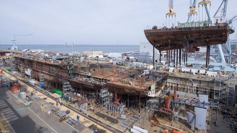

Senior leaders
"What does this ship cost, and can I stand behind the number?"
Start here if you brief, budget, estimate or audit the ship. Pick your question, check what the evidence supports today, then act on what is still open. Every line links to the record behind it.
For senior leaders, the PEO, the comptroller, anyone briefing the ship Decision what goes in the brief, what is held, and who acts next
Pick the group closest to your role. Each card names the question that group brings and opens the two pages that answer it first.
"What does this ship cost, and can I stand behind the number?"

"Where did the money go, and why did the estimate move?"

"Is there a traceable actuals baseline for the next estimate?"

"What is funded, by year, and how does it stand against the cap?"

"Can the asset's value be traced to transactions?"

"Can I put a governed tool over my own data without a developer?"
Four numbers carry most briefs. The left column lists what the evidence supports, with its source. The right column lists what is printed somewhere but not yet safe to say, and why.
It decomposes exactly two ways: by cost category and by funding stream, each closing to a residual of 0.000.
Basis: PB2027 SCN Book, Exhibit P-5c, 1611N/02/2001, FY2013 column · Position · Cost compositionOnly one of the four, the $1.3 billion August 2021 contract overrun, is cost growth in the ordinary sense.
Basis: 10 U.S.C. 8692 and the cap history · Estimate history and capsPreliminary acceptance was on 29 September 2026; delivery is planned for March 2027 and completion of fitting out for July 2027.
Basis: FY2013 and FY2026 budget submissions, as stated by CRS RS20643 · The shipThe two HII prime contracts alone are 67.8% of the hull ($9,098M obligated). The other 24.2% has no public contract record; the largest block is the nuclear propulsion plant (G22).
Basis: FPDS obligation records · Cost compositionThe FY2027 MSAR prints it as a December 2025 increase, but the notification itself is not in hand and the same figure has been CVN-80's baseline since August 2023. Until a person confirms it, $12,936M stands. The answer decides whether the ship is $473.97M over its baseline or $119.03M under it.
Held: E-17 · rule CAP-05 · request with OUSD(C) FMOThree ceilings are current and each is right for its purpose: the $11,398.0M statutory cap, the $12,936M SECNAV Cost Limitation Baseline, and the $13,409.970M budget total. A brief that shows one as "the cap" is wrong for the other two readers.
Variance E-1 · PositionAward-level outlays cover 0.8% of the $9,098M obligated on the two primes, so public data cannot show payments. This is the FBwT weakness showing in the public record.
Gap G25 · needs DFAS Columbus or Navy FMO59 questions still stand between the published figures and a number you can defend. These are the top three, ranked by dollars at stake, how little is known and how easily each can be closed. 14 of the 59 need no special access.
| Gap | Question | Who can close it | Exposure | How |
|---|---|---|---|---|
| G14 | When construction in progress is relieved for this hull | Navy FMO or NAVSEA | $13,410M | No access needed |
| G25 | Award level outlay reporting covers under one per cent of obligations | DFAS Columbus, Navy FMO, OUSD(C) | $9,025M | Needs access |
| G23 | Outfitting and post delivery attributable to this hull | Navy FMB, PEO Carriers | $1,767M | No access needed |
The pages above read from the same records the agents and MCP servers use. These four put them to work on your own question.
Ask in plain words. The agent answers from the records and cites what each figure rests on.
A specialist agent counts which CVN-79 figures tie to source records and drafts what is still missing. Nothing is saved until a person applies it.
Every contract action, exhibit table, collection request and lead, with totals and a download.
The same servers and agents applied to the Ford class, the F-35 and 59 more programs, and how each piece was built and tested.
Sources PB2027 SCN Book, Exhibit P-5c, 1611N/02/2001, FY2013 column · PB2027 Exhibit P-5c, FY2013 column. VERIFIED c=0.98 · builder HII Newport News Shipbuilding, CAGE 43689. Nothing on this page is cleared as a reported figure until the cited source is pulled and its as-of date recorded.